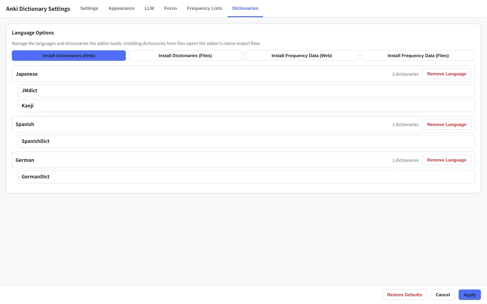
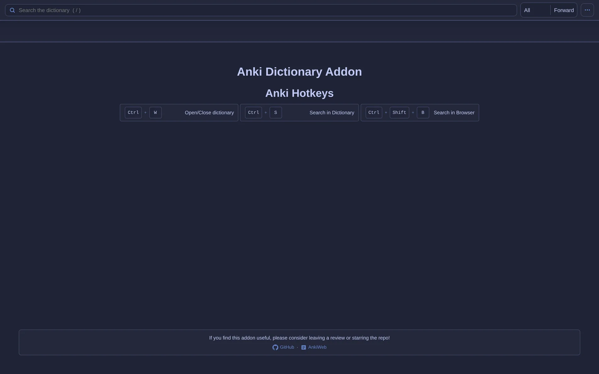
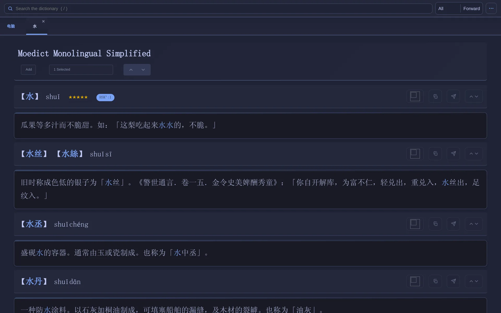
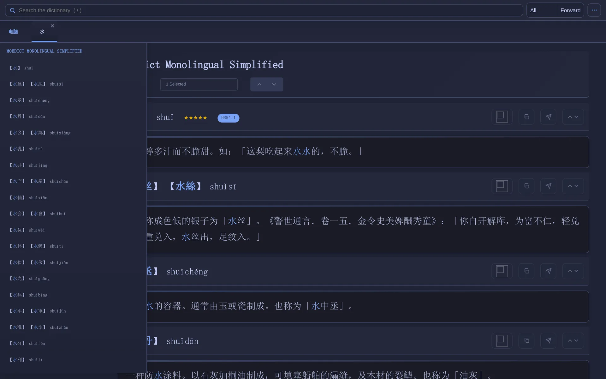
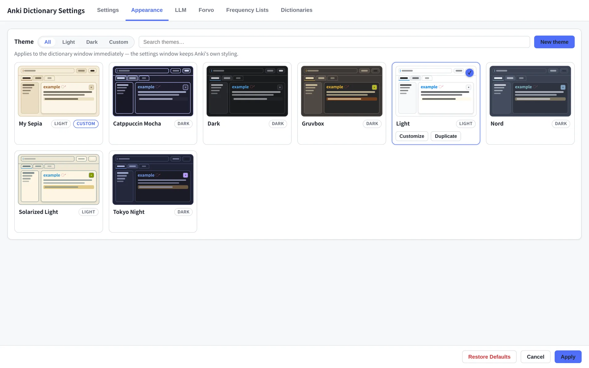
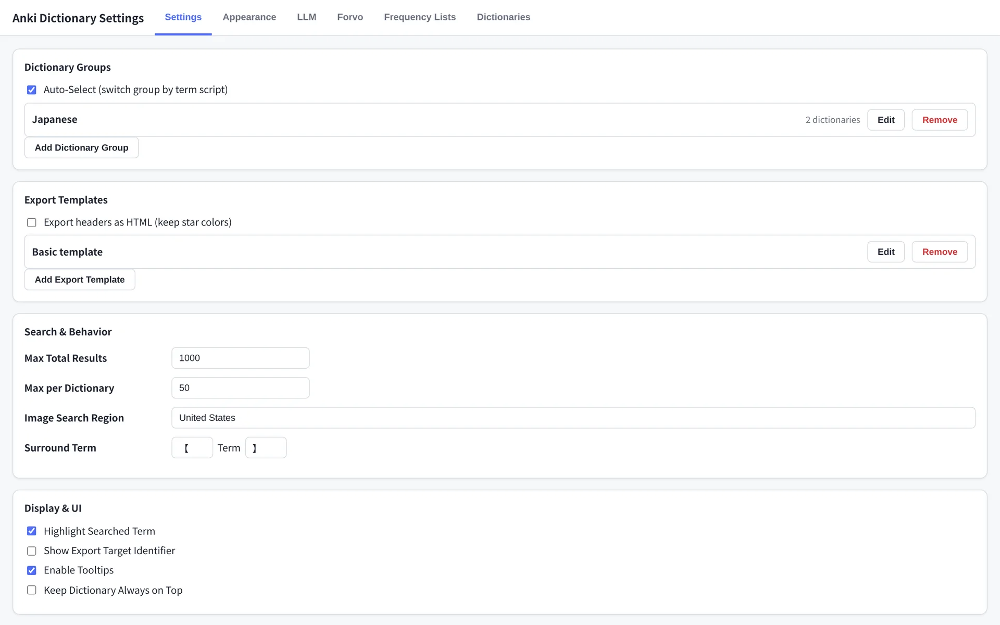

Installation
The add-on runs inside Anki 25.09 or newer on the desktop. It is fully tested on macOS and Linux; Anki provides the Qt and web engine runtime, so there is nothing else to install.
Option 1 · AnkiWeb (recommended)
- Open Anki and choose Tools → Add-ons.
- Click Get Add-ons… and enter the code below.
- Restart Anki. An Anki Dictionary menu appears in the top menu bar.
1973740182Option 2 · Release file
- Download the latest
.ankiaddonfrom the releases page. - In Anki, open Tools → Add-ons.
- Drag the file onto the Add-ons window, or click Install from file… and select it.
- Restart Anki.
uv sync, then link the add-on into your
addons21 folder.
Install dictionaries
Open Anki Dictionary → Dictionary Settings → Dictionaries. Use Install Languages in Wizard for a guided language → dictionaries flow, or Install Dictionary From File for a Yomichan- or Migaku-format ZIP. You can add frequency lists and conjugation tables from the same tab.

Quick start (5–10 min)
The minimum path from a clean Anki to a finished card.
- Install Anki 25.09+ and restart it once.
- Install the add-on with the AnkiWeb code
1973740182(or a release file). - Open Anki Dictionary → Dictionary Settings → Dictionaries and install at least one dictionary for your target language.
- Press Ctrl+W (⌘+W on macOS) or choose Anki Dictionary → Open Dictionary.
- Type a word, press Enter, choose a result. Highlighting text anywhere in Anki and pressing Ctrl+S searches it immediately.
- Pick the target field in the dictionary header, then click Send to Field.


Searching
Type into the search bar and press Enter, or click the search button.
Select any text in Anki and press Ctrl+S
(⌘+S) to send it straight to the dictionary. Bracket
pairs (), [], （） and 《》
are stripped with their contents, so pasted text with furigana still works.
Seven search modes
| Mode | What it matches |
|---|---|
| Forward | Entries beginning with the query |
| Backward | Entries ending with the query |
| Exact | Entries equal to the query |
| Anywhere | The query anywhere in the entry |
| Definition | The query in definition text |
| Example | The query in an example sentence |
| Pronunciation | Entries whose pronunciation matches (forward-style) |
Pick the mode from the dropdown next to the search bar. Exact is a good default; switch to Forward or Anywhere when a lookup returns nothing.
Dictionary groups
A group is the set and order of dictionaries searched at once. The toolbar dropdown ships with All, Images, Forvo, LLM and one group per installed language. Create your own in Settings → Dictionary Groups; the numbers you assign are the result order.
Tabs and deconjugation
Multi-Tab keeps each search in its own tab; Single-Tab overwrites the current one. Toggle between them with the tab button in the toolbar and right-click a tab to close it.
The cube toggle enables deconjugation: conjugated input is resolved to its dictionary form before searching. It needs a conjugation table for the language, installed from the Dictionaries tab.

Frequency, stars and level labels
When a frequency list is installed, each entry header carries stars and often
a numeric rank. Level data appears as labels such as HSK³:1,
JLPT:N2 or CEFR:B2. If two lists publish the same
label, it is shown once; hover the pill to see both sources.
| Stars | Rank range |
|---|---|
| ★★★★★ | 1 – 1,500 |
| ★★★★ | 1,500 – 5,000 |
| ★★★ | 5,000 – 15,000 |
| ★★ | 15,000 – 30,000 |
| ★ | 30,000 – 60,000 |
| none | 60,000+ |
The results window
- Dictionary headers hold the duplicate-header toggle, output mode, field selector, and previous/next dictionary controls.
- Definition headers hold the term, reading, frequency, and the Send to Exporter, Copy, Send to Field and entry navigation buttons.
- Sidebar lists every result from the current search; click one to jump to it, right-click a dictionary name to fold its entries. Toggle the sidebar next to the search button.
- History is behind the clock icon. Double-click a term to search it again.
- Zoom with the + and − buttons; the sidebar and definitions resize together.
- Search Collection (right-click a selected word) finds cards containing it in the Card Browser.

Send to field
The fastest way to build a card: choose where the text should land, then send it. This works in the Add, Edit, Browser and Reviewer windows.
- Pick the target field in the Field Selector dropdown in the dictionary header.
- Choose the output mode: Add, Overwrite or If Empty.
- Click Send to Field in a definition header. With text highlighted, only that portion plus the header is sent; with nothing highlighted, the whole definition goes.
| Output mode | Behaviour |
|---|---|
| Add | Appends to the field's existing content |
| Overwrite | Replaces the field's content |
| If Empty | Only writes when the field is empty |
LLM definitions
Use any OpenAI-compatible API or a local Ollama model to generate definitions, examples or explanations in the same result page.
Setup
- Open Anki Dictionary → Dictionary Settings → LLM.
- Enable the feature, choose OpenAI or Ollama, and set the base URL, key and model.
- Write one or more prompt templates. Select the LLM group, or wait for the LLM block to arrive beside the dictionary results.
| Setting | Purpose |
|---|---|
| Base URL | https://api.openai.com/v1 or http://localhost:11434 |
| API key | Not needed for a local Ollama endpoint |
| Model | For example gpt-4o-mini or llama3 |
| Prompt | Instruction sent with the term, part of speech and optional frequency/HSK context |
| Temperature | 0.0–2.0 |
| Timeout | Seconds before the request is abandoned |
| Keep alive / Stream | Ollama model residency and token streaming |
Multiple definitions from one call
Separate prompt templates with a line containing only ---. The
model is instructed to mirror that delimiter in its response, and the add-on
splits the answer into independent definition blocks — each with its own
export, clip and send tools. It is still a single API call.
Define the word for a beginner. Keep it under 30 words.
---
Give one natural example sentence and translate it.
---
List the part of speech and register.DuckDuckGo images
Image search behaves like a dictionary source. Choose the Images group, click an image to select it (click again to deselect), then click Send to Field.
- The image is attached to the field selected in the current dictionary header.
- Set the search region and maximum width/height under Settings → Options.
- The Card Exporter can also pull images automatically — see Card Exporter.
Forvo audio
Choose the Forvo group, tick a recording, then click Send to Field. Forvo language is configured under Settings → Forvo.
Card Exporter
The exporter is a staging window: collect several definitions, a sentence, notes, one image and one recording, then add the card in one action.
Export templates
A template maps content types onto the fields of one note type. Create at least one under Settings → Export Templates before using the exporter.
| Template slot | Content |
|---|---|
| Notetype | The note type cards are created with |
| Sentence field | Context sentence or selected text |
| Word field | The looked-up term |
| Secondary field | Optional second line—reading, translation, notes |
| User notes | Free-form text |
| Image field | Screenshot or searched image |
| Audio field | Forvo or pasted recording |
| Tags | Tags applied to the new note |
Build a card
- Click Send to Exporter (the Anki icon) in any definition header. Selected text goes to the sentence field; otherwise the whole entry goes to the definition list.
- Add an image or audio with Ctrl+Shift+V (⌘+Shift+V) from the clipboard. One of each is kept; a second replaces the first.
- Click Add, or press Ctrl+Enter / ⌘+Enter.
Automatically Add Definitions opens a settings panel where you can choose up to three dictionaries and a per-dictionary limit. The same panel can pull DuckDuckGo Images and Forvo audio automatically. With Add Extension Cards Automatically, the note is created as soon as the content is ready.
Mass export existing cards
- Select cards in the Card Browser.
- Choose Edit → Export Definitions.
- Set the input field (one unconjugated term), output field, up to three dictionaries, output mode and max definitions per dictionary.
- Click Execute.
Themes
The theme system is JSON — fourteen colour roles that cover the window, headers, tabs, search bar, sidebar, buttons, links and highlights. It is not a binary light/dark toggle, and themes are portable between installs.
Apply a theme
Open the Appearance tab in Settings (or the theme icon in the dictionary toolbar). Click a card and the open window repaints immediately. The gallery can be filtered by light, dark or custom and searched by name; a wrong pick can be undone from the notice at the bottom.
Create or edit
- Click New theme, or Customize/Duplicate on an existing card.
- Adjust the colours; the live preview and readability audit update as you type.
- Use the two-colour generator to derive a WCAG-contrast-safe palette from a background and an accent.
- Save, or Save & Apply. JSON can be copied out and pasted back in for sharing.

The active theme lives in user_files/themes/active.json inside the
add-on folder. The landing page gallery shows the
same search across five of the built-ins.
Settings
Open Anki Dictionary → Dictionary Settings or the gear icon in the dictionary window. Tabs: Options, LLM, Forvo, Frequency and Dictionaries, plus export templates and dictionary groups.

Options
| Setting | Effect |
|---|---|
| Max total search results | Cap across all dictionaries |
| Max dictionary search results | Cap per dictionary |
| Highlight searched term | Marks the match inside definitions |
| Show export target identifier | Shows which card window will receive the next send |
| Enable tooltips | Hover help on buttons |
| Always on top | Keeps the dictionary above other windows |
| Image search region / max width / max height | DuckDuckGo result filtering |
| Surround term brackets | Front and back characters around terms |
| Font size (definitions / sidebar) | Base text sizes |
Frequency
Show or hide stars, choose the star character, and edit the rank thresholds.
Rank, HSK and level-label display can be toggled separately. HSK mode selects
HSK 2.0, 3.0 or both. Per-list display names are configurable, which is how
labels such as HSK³ are produced.
Restore Defaults sits at the bottom-left of the settings window. Close and reopen the dictionary window after restoring.
Troubleshooting / FAQ
The Anki Dictionary menu is missing
Confirm Anki is 25.09 or newer and restart it. Check the add-on is
enabled under Tools → Add-ons. If you installed from source, verify the
folder is directly under addons21 and contains __init__.py.
A search returns nothing
- Check the selected dictionary group contains a dictionary for the language.
- Try Forward or Anywhere instead of Exact.
- If the word is conjugated, enable the deconjugation toggle and install a conjugation table.
- Check Max total search results is not zero.
An installed dictionary does not appear
Language groups are created when a language is added. Edit the group and tick the dictionary, or select All. Removing and reinstalling a dictionary keeps the group definition, but the group must still include it.
The LLM block errors or times out
- Verify the base URL includes the API prefix, e.g.
https://api.openai.com/v1. - Check the key and model name. Local Ollama needs no key, but the server must be running.
- Raise the timeout or choose a faster model.
- If responses are empty, simplify the prompt; a refusal is not a parse failure.
Forvo returns no recordings
Enable Forvo, set the language in Settings → Forvo, and confirm the machine can reach the network. The Forvo group is separate from your language dictionaries, so select it explicitly.
Send to Field writes to the wrong card
The add-on targets the most recently used card window. Enable Show Export Target Identifier to see the target before sending. Close extra Add/Edit windows if the choice is ambiguous.
Definitions repeat the term
Some dictionary entries already include the headword. Tick Duplicate Header in that dictionary's header to strip the generated one.
A settings change did nothing
Some settings are read when the dictionary window opens. Close it and reopen with Ctrl+W / ⌘+W. Theme changes apply immediately and do not need a restart.
Where are the logs?
In Anki, open Tools → Add-ons, select the add-on and click
View Files. The rotating log is logs/addon.log inside that
folder. Attach the relevant tail to a
bug report.
How do I uninstall?
Disable the add-on, restart Anki, then delete it from Tools → Add-ons.
User dictionaries and themes live under the add-on's user_files/
folder; keep that folder if you plan to reinstall.
Contributing
The project is AGPLv3 and built with Python 3.13, PyQt6 and a Svelte result shell. Start with the developer docs:
- Architecture — package layout, search pipeline, rendering
- Development — environment, build, add-on linking
- Testing — unit, integration and UI checks
uv sync
python dev.py test
python dev.py lint